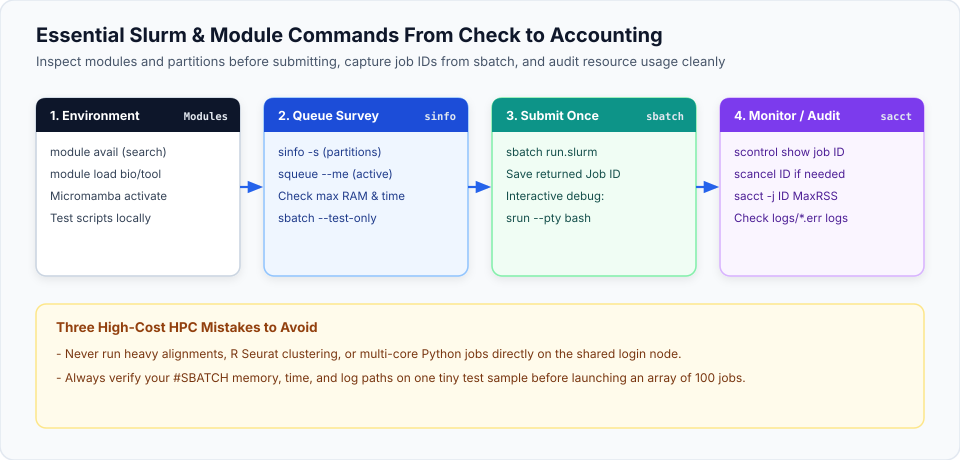
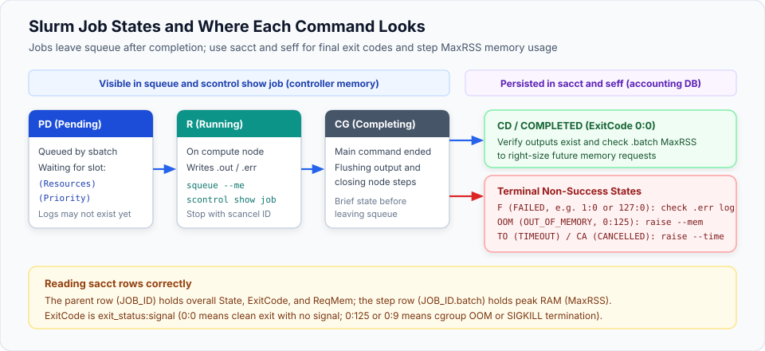

Basic Slurm Commands
Nasir Mahmood Abbasi, PhD
Bioinformatics Educator
When you log in to an institutional HPC cluster, you land on a shared login node meant only for editing files and running short commands, not heavy alignments or R/Python analyses. Slurm (Simple Linux Utility for Resource Management) is the job scheduler that assigns your work to dedicated compute nodes with isolated CPU and memory limits. In this reference, you inspect available software modules and cluster queues, test a tiny R or Python script locally, submit a batch job once and capture its ID, check live and completed job states, and launch an interactive compute shell.
- You will be able to: check software modules (
module avail,module spider), survey partitions and queue wait reasons (sinfo,squeue), dry-run and submit a batch script (sbatch), verify exit codes and peak memory (sacct,scontrol,seff), cancel jobs (scancel), and start an interactive session (srun --pty bash). - Prerequisites: basic shell navigation (Command-Line Navigation for Bioinformatics) and an active SSH connection to a Slurm cluster (Connecting to HPC).
- Time: about 25 to 35 minutes to read through and test on your cluster.
Format: Reference. Use this command guide once you have SSH access to a Slurm cluster. Replace placeholder partition names, account flags, and module names with values from your cluster's user documentation.
1. Why Slurm separates login nodes from compute nodes
A login node is shared by dozens of researchers at once. Running multi-core tools such as STAR, samtools sort, or Seurat clustering directly on a login node exhausts shared memory and slows everyone down, so administrators configure automated monitors to kill heavy login-node processes.
Instead, you stay on the login node only to prepare scripts, check queues, and hand jobs to Slurm. Slurm places each request on a compute node where Linux cgroups (control groups) enforce the exact CPU count and RAM ceiling you requested. Treat the four-stage loop below as your standard cluster routine.

sbatch (or debug with srun --pty bash), and audit resource usage with sacct.2. Check and clean your module environment
Why this comes first: HPC clusters install hundreds of bioinformatics tools and multiple versions of R, Python, and compilers side by side. To prevent version conflicts, sites hide most software from your default PATH and expose it on demand through Environment Modules or Lmod via the module command.
Because module is typically a shell function rather than a standalone binary, a non-interactive batch script does not always initialize it the same way your interactive login shell does. Always test whether module exists and inspect what is loaded rather than guessing initialization paths:
if command -v module >/dev/null 2>&1; then
module avail
module list
else
echo "No module command in this shell; check site instructions for batch-shell initialization."
fiThree practical module habits prevent most environment surprises:
- Use
module spider <name>on Lmod clusters: hierarchical Lmod trees hide packages that depend on a specific compiler or MPI stack until that compiler is loaded.module availlists only currently reachable modules, whereasmodule spider Rsearches the entire software tree and tells you which prerequisite modules to load first. - Reset with
module purgein real workflows:module purgeunloads non-sticky modules so packages you tested interactively on the login node do not leak into a batch job. Modules marked(S)are site-sticky defaults that stay loaded unless forced. - Keep Conda/Micromamba and modules separated: if you manage R or Python packages with Micromamba (Micromamba Environments for Bioinformatics), avoid loading conflicting system R/Python modules at the same time. Always let a batch script exit immediately on a failed
module loadrather than falling back silently to a system binary.
3. Inspect partitions, node states, and your queue
Why inspect before submitting: clusters group compute nodes into partitions (named queues with distinct time limits, memory sizes, or GPU hardware). Submitting to the wrong partition or requesting more RAM than any node physically has will either reject your job immediately or leave it stuck pending indefinitely.
sinfo
sinfo -s
sinfo --Node --long
sinfo -p PARTITION_NAMEsinfo -sprints one summary line per partition showingAVAIL(upordown),TIMELIMIT, andNODES(A/I/O/T)(Allocated / Idle / Other / Total). An asterisk (*) next to a partition name marks the cluster's default partition.sinfo --Node --longlists each compute node's CPU count (CPUS), memory in megabytes (MEMORY), and exact state:idle(free),alloc(all resources used),mix(partially allocated; some CPUs/RAM remain free),drain/drained(taken offline after current jobs finish), ordown(unavailable).sinfo -p PARTITION_NAMEfilters the view to a single partition reported by your site. Even when nodes appearidle, your account or QOS (Quality of Service) must still be authorized to use that partition.
Example output (abbreviated) from sinfo -s:
PARTITION AVAIL TIMELIMIT NODES(A/I/O/T) NODELIST
short* up 12:00:00 14/6/0/20 node[01-20]
long up 7-00:00:00 8/2/0/10 node[21-30]
highmem up 3-00:00:00 3/1/0/4 bigmem[01-04]Next, inspect active and queued jobs belonging to your user account. On modern Slurm releases you can type squeue --me as shorthand; the formatted command below works across versions and shows compact state codes alongside pending reasons:
squeue -u "$USER" -o "%.18i %.9P %.30j %.10u %.2t %.10M %.6D %R"In the format string, %i is the job ID, %P is the partition, %j is the job name, %u is the user, %t is the two-letter state, %M is elapsed time, %D is node count, and %R is either the assigned node list (when running) or the reason the job is waiting.
Example output (abbreviated) for a user running one alignment and waiting on a Seurat job:
JOBID PARTITION NAME USER ST TIME NODES NODELIST(REASON)
4825 short star_sample1 jsmith R 0:42:18 1 node07
4826 highmem seurat_merge jsmith PD 0:00 1 (Resources)| Code or Reason | Meaning | What to do |
|---|---|---|
PD (PENDING) | Queued and waiting for resources or priority. | Check %R; do not resubmit in a loop. |
R (RUNNING) | Currently executing on one or more compute nodes. | Monitor logs with tail -f or check metadata via scontrol. |
CG (COMPLETING) | Main process ended; Slurm is closing node steps and flushing I/O. | Wait briefly; the job will move to sacct shortly. |
CD (COMPLETED) | Finished with exit code 0:0. | Verify output files and check MaxRSS in sacct. |
F (FAILED) | Terminated with a non-zero exit status (e.g., 1:0 or 127:0). | Read slurm-<ID>.err and slurm-<ID>.out. |
TO (TIMEOUT) / OOM (OUT_OF_MEMORY) / CA (CANCELLED) | Hit walltime limit, exceeded cgroup memory, or cancelled by user/admin. | Inspect Elapsed and .batch MaxRSS in sacct before adjusting limits. |
(Resources) / (Priority) | Matching nodes are busy or higher-priority jobs are ahead of yours. | Normal queue behavior; wait, or reduce requested resources if overly large. |
(AssocGrpMemLimit) / (QOSMaxCpuPerUserLimit) | Your account or user hit its concurrent memory or CPU quota. | Wait for your running jobs to finish before adding more. |
4. Run a fast local check before touching the queue
Before wrapping an analysis in a batch script, run a tiny 1-second check on your own machine (or interactively) to confirm the interpreter works and produces predictable output. Both routes below use standard-library code only and require no cluster, scheduler, or research data. Save your chosen script as hello.R or hello.py so you can reuse the exact same file in the batch step below.
R · base R (primary route)
cat("Selected Rscript: ", Sys.which("Rscript"), "\n", sep = "")
cat("R version: ", R.version.string, "\n", sep = "")
cat("Hostname: ", Sys.info()[["nodename"]], "\n", sep = "")
cat("Sum 1..100: ", sum(1:100), "\n", sep = "")Save this code as hello.R and run Rscript hello.R. Expected output prints the resolved Rscript path, R version, host name, and Sum 1..100: 5050. The executable path, version, and host name vary by machine.
Python · optional alternative
import platform
import sys
print(f"Selected Python: {sys.executable}")
print(f"Python version: {platform.python_version()}")
print(f"Hostname: {platform.node()}")
print(f"Sum 1..100: {sum(range(1, 101))}")Save this Python 3 script as hello.py and run python3 hello.py to verify interpreter path, Python version, host name, and Sum 1..100: 5050 locally before moving to cluster queues.
Actual output from running both scripts locally in this environment (your paths, versions, and hostname will reflect your computer):
$ Rscript hello.R
Selected Rscript: /usr/bin/Rscript
R version: R version 4.6.1 (2026-06-24)
Hostname: sandbox
Sum 1..100: 5050
$ python3 hello.py
Selected Python: /usr/bin/python3
Python version: 3.12.3
Hostname: sandbox
Sum 1..100: 5050Check: confirm Sum 1..100: 5050 prints cleanly with exit status 0 (echo $?) before moving on to a Slurm batch script.
5. Write and dry-run a batch script
A batch script bundles your Slurm resource request (#SBATCH directives) together with the exact shell commands to run on a compute node. Put all #SBATCH lines directly below the #!/usr/bin/env bash shebang: Slurm parses directives from the top of the file before starting the shell, stops recognizing directives if placed awkwardly after executable commands on some configurations, and does not expand shell variables such as $HOME inside #SBATCH values.
R · base R (primary route)
On the cluster, change to a permitted working directory (such as your project or scratch directory, where hello.R lives) and save the script below as smoke.sbatch. Replace the R module placeholder with the exact module name documented by your HPC site. The request below (1 node, 1 task, 1 CPU, 1 GB RAM, 5 minutes) fits a tiny smoke test; real bioinformatics tasks need values matched to your tool and dataset.
#!/usr/bin/env bash
#SBATCH --job-name=r-smoke
#SBATCH --output=slurm-%j.out
#SBATCH --error=slurm-%j.err
#SBATCH --nodes=1
#SBATCH --ntasks=1
#SBATCH --cpus-per-task=1
#SBATCH --time=00:05:00
#SBATCH --mem=1G
set -euo pipefail
# Replace with the exact R module name and batch-shell setup documented by your site.
if ! command -v module >/dev/null 2>&1; then
echo "module is not initialized in this batch shell; follow site batch-shell instructions." >&2
exit 127
fi
if ! module load REPLACE_WITH_SITE_DOCUMENTED_R_MODULE; then
echo "R module load failed; refusing to use an unrelated installation." >&2
exit 1
fi
if ! rscript_path=$(command -v Rscript); then
echo "Rscript is not available after the documented module load." >&2
exit 127
fi
printf 'Selected Rscript: %s\n' "$rscript_path"
"$rscript_path" --version
hostname
"$rscript_path" hello.RAdd #SBATCH --partition=... or #SBATCH --account=... if your cluster requires them. If your site uses Conda/Micromamba or container images instead of module, replace the module block with an explicit fail-fast check for the documented Rscript executable rather than falling back to whatever binary sits in /usr/bin.
Python · optional batch alternative
This equivalent script runs hello.py with Python 3 instead of R. Save it as python-smoke.sbatch in the directory holding hello.py, and substitute your cluster's documented Python module name.
#!/usr/bin/env bash
#SBATCH --job-name=python-smoke
#SBATCH --output=slurm-%j.out
#SBATCH --error=slurm-%j.err
#SBATCH --nodes=1
#SBATCH --ntasks=1
#SBATCH --cpus-per-task=1
#SBATCH --time=00:05:00
#SBATCH --mem=1G
set -euo pipefail
if ! command -v module >/dev/null 2>&1; then
echo "module is not initialized in this batch shell; follow site batch-shell instructions." >&2
exit 127
fi
if ! module load REPLACE_WITH_SITE_DOCUMENTED_PYTHON_MODULE; then
echo "Python module load failed; refusing to use an unrelated interpreter." >&2
exit 1
fi
python_path=$(command -v python3) || { echo "python3 is unavailable after module load." >&2; exit 127; }
printf 'Selected Python: %s\n' "$python_path"
python3 --version
hostname
python3 hello.pyEven when a batch smoke test succeeds, it verifies only that Slurm scheduled the job and found the expected interpreter. Treat it as a sanity check before submitting full pipelines.
Key lines explained:
--output=slurm-%j.outand--error=slurm-%j.err: Slurm replaces%jwith the assigned job ID. If you put logs in a subfolder such aslogs/slurm-%j.out, createlogs/before runningsbatchor the job will fail immediately when trying to open the log file.--ntasks=1and--cpus-per-task=1: for single-process multi-threaded bioinformatics tools (for exampleSTAR --runThreadN 8,samtools sort -@ 8, orSeuratwithfuture), keep--ntasks=1and raise--cpus-per-task(matching the tool's thread flag).--mem=1Gand--time=00:05:00: maximum RAM per node (or use--mem-per-cpu) and wallclock limit inHH:MM:SS(orD-HH:MM:SS).set -euo pipefail: stops the script immediately if any command fails, an unset variable is referenced, or a command inside a pipeline exits non-zero.
Dry-run before queuing: run sbatch --test-only to ask Slurm to validate your directives, check partition/account limits, and print an estimated start time without actually submitting a job:
sbatch --test-only smoke.sbatch6. Submit once, capture the job ID, and verify completion
For quick interactive use, running sbatch smoke.sbatch prints Submitted batch job 4829 (or substitute python-smoke.sbatch for the Python route). When you want a clean, script-safe identifier without parsing prose, pass --parsable: Slurm prints only JOB_ID, or JOB_ID;CLUSTER on federated multi-cluster setups.
Run the capture snippet below from the directory containing smoke.sbatch and hello.R. Using (exit 1) inside a subshell sets a non-zero exit status on errors without accidentally closing your interactive SSH terminal:
JOB_ID=""
CLUSTER=""
if ! submission=$(sbatch --parsable smoke.sbatch); then
echo "Submission failed; check the site policy and error above. No job ID was captured." >&2
(exit 1)
elif [[ "$submission" =~ ^([0-9]+)(;([^;[:space:]]+))?$ ]]; then
JOB_ID=${BASH_REMATCH[1]}
CLUSTER=${BASH_REMATCH[3]:-}
printf 'Slurm accepted job %s' "$JOB_ID"
if [[ -n "$CLUSTER" ]]; then printf ' on cluster %s' "$CLUSTER"; fi
printf '\n'
else
printf 'Unexpected sbatch --parsable response: %s\n' "$submission" >&2
(exit 1)
fiGetting a job ID means Slurm accepted your request into the queue, not that the job has started or succeeded. As the job moves from pending (PD) to running (R) to terminal states, the command you use to inspect it changes from live queue tools to accounting tools:

squeue and scontrol show job while queued, running, or briefly after finishing; once purged from controller memory, query sacct and seff for final exit codes and step memory usage.Once your job has had time to finish, check its live queue status and accounting record in the same shell using the captured $JOB_ID (and -M "$CLUSTER" if federated). Wrapping this check in a subshell ( ... ) keeps your SSH session open if a check exits early:
(
if [[ -n "$CLUSTER" ]]; then
squeue -M "$CLUSTER" -j "$JOB_ID"
if ! accounting=$(sacct -M "$CLUSTER" --noheader --parsable2 --jobs="$JOB_ID" --format=JobID,State,ExitCode); then
echo "Accounting query unavailable; check site documentation and try later." >&2
exit 1
fi
else
squeue -j "$JOB_ID"
if ! accounting=$(sacct --noheader --parsable2 --jobs="$JOB_ID" --format=JobID,State,ExitCode); then
echo "Accounting query unavailable; check site documentation and try later." >&2
exit 1
fi
fi
printf 'Accounting rows (job and possibly step records):\n%s\n' "$accounting"
allocation=$(printf '%s\n' "$accounting" | awk -F'|' -v id="$JOB_ID" '$1 == id { print $2 "|" $3; exit }')
if [[ -z "$allocation" ]]; then
echo "No allocation accounting row yet. This is not evidence of failure; wait or ask the site about accounting." >&2
exit 1
fi
if [[ "$allocation" != "COMPLETED|0:0" ]]; then
printf 'Success is not confirmed (allocation record: %s). Pending or unavailable records do not prove failure.\n' "$allocation" >&2
echo "Do not resubmit automatically. Check the state and site guidance first." >&2
exit 1
fi
if grep -Fq 'Sum 1..100: 5050' "slurm-${JOB_ID}.out"; then
echo "Confirmed COMPLETED/0:0 and expected synthetic output."
else
echo "Job reports COMPLETED/0:0 but the expected output line is absent; inspect the job output and working directory." >&2
exit 1
fi
)Notice two details in the verification above: first, awk matches the exact top-level allocation row ($1 == id) rather than a step row like 4829.batch; second, the check requires both COMPLETED and 0:0 before trusting the output file. Even then, a 0:0 exit status only says your script exited cleanly: for real genomics or single-cell runs, still check that output BAMs, VCFs, or count matrices are non-empty and scientifically valid.
Worked reading: if the allocation row reads 4829|PENDING|0:0, the job is still waiting in the queue and log files may not exist yet, so wait rather than resubmitting. If it reads 4829|FAILED|1:0, the script ran and exited with status 1; inspect the error and output logs right away:
cat "slurm-${JOB_ID}.err"
cat "slurm-${JOB_ID}.out"7. Cancel jobs, inspect live metadata, check MaxRSS, and run interactive shells
Beyond checking queues and submitting scripts, four everyday commands cover cancelling mistaken jobs, inspecting scheduler metadata, measuring actual peak memory, and opening an interactive shell on a compute node:
# Cancel one specific job ID (always prefer an explicit ID over user-wide flags):
scancel "$JOB_ID"
# Inspect full live scheduler metadata while a job is queued, running, or recently completed:
scontrol show job "$JOB_ID"
# Inspect elapsed walltime, requested memory, and peak resident memory (MaxRSS) after completion:
sacct --jobs="$JOB_ID" --format=JobID,JobName%16,State,ExitCode,Elapsed,ReqMem,MaxRSS
# Request an interactive compute shell (replace partition/account flags per site policy):
srun --nodes=1 --ntasks=1 --cpus-per-task=2 --mem=4G --time=01:00:00 --pty bashExample output (abbreviated) from sacct for a finished single-node batch job:
JobID JobName State ExitCode Elapsed ReqMem MaxRSS
------------ ---------------- ---------- -------- ---------- ---------- ----------
4829 r-smoke COMPLETED 0:0 00:00:04 1G
4829.batch batch COMPLETED 0:0 00:00:04 68420K
4829.extern extern COMPLETED 0:0 00:00:04 1320Kscancel: stops a pending or running job immediately with no confirmation prompt. Always double-checkJOB_ID; bulk forms likescancel -u "$USER" -t PENDINGcancel all of your queued jobs at once.scontrol show job: displays full live fields such asReason=,WorkDir=,StdOut=,TimeLimit=, andReqTRES=. Once a job finishes, Slurm keeps it in controller memory for only a brief window (often a few minutes), after whichscontrolreturnsInvalid job id specifiedand you switch tosacct.MaxRSSandseff: peak resident memory (MaxRSS) appears on step rows (4829.batchor4829.0), not on the parent allocation row (4829). Here68420K(~67 MB) out of1Grequested shows generous headroom; for a real pipeline, checkingMaxRSSlets you right-size future jobs instead of guessing. Many sites also provideseff "$JOB_ID"for a quick CPU and memory efficiency summary. Slurm reportsExitCodeasexit_status:signal: anOUT_OF_MEMORYkill typically records0:125or0:9(or137:0when a subcommand inside your script is terminated by SIGKILL).srun --pty bashandsalloc: give you an interactive prompt on a compute node for exploratory R/Python plotting or testing an alignment command on one small sample. Typeexitonce when done so you stop consuming allocation time. On newer Slurm setups withLaunchParameters=use_interactive_step,sallocalso opens a shell on the allocated node directly.
When to use batch (sbatch) vs. interactive (srun --pty / salloc)
- Use
sbatchfor anything longer than ~15-30 minutes, multi-sample loops or job arrays, high-memory jobs (such asSTARgenome alignment or largeSeuratintegration), or anything you want to keep running after closing your laptop. - Use
srun --pty bashfor short interactive work on a compute node: testing module paths, inspecting a BAM/AnnData file in R or Python, or running a 5-minute debug test before writing a full.sbatchscript. - Use
sallocwhen you need an interactive allocation block across multiplesrunsteps or multiple nodes (depending on your site's configuration).
8. Common Slurm errors and how to fix them
| Error message or state | Likely cause | How to fix |
|---|---|---|
sbatch: error: Batch script contains DOS line breaks (\r\n) | The script was created or edited in a Windows editor using CRLF line endings. | Convert line endings with dos2unix smoke.sbatch (or sed -i 's/\r$//' smoke.sbatch) and resubmit. |
sbatch: error: Invalid partition name specified or Invalid account or account/partition combination specified | Missing or misspelled --partition / --account flag, or account not authorized for that partition. | Run sinfo -s to list partitions and sacctmgr show assoc user="$USER" format=Cluster,Account,Partition,QOS,DefQOS to see allowed accounts. |
sbatch: error: Memory specification can not be satisfied | Requested --mem exceeds the RAM of any single node in the chosen partition. | Check node RAM (in MB) via sinfo --Node --long; lower --mem or switch to a high-memory partition. |
FAILED with ExitCode 127:0 and command not found in .err | Required module or environment was not loaded in the non-interactive batch shell. | Add explicit module purge and module load (or environment activation) inside the .sbatch script, then verify with command -v. |
OUT_OF_MEMORY (ExitCode 0:125 or 0:9) | Process peak RAM hit the cgroup memory ceiling. | Check MaxRSS on the .batch row in sacct (or seff), increase --mem with 20-30% headroom, or reduce thread count if each thread duplicates data. |
TIMEOUT | Job ran longer than --time before finishing. | Check Elapsed in sacct; raise --time within the partition TIMELIMIT or split samples into a Slurm job array. |
9. Practice: diagnose an RNA-seq job record
Suppose you submitted an RNA-seq alignment job (star_align) requesting 16 GB of memory and 2 hours of walltime, and later ran sacct -j 5104 --format=JobID,JobName%14,State,ExitCode,Elapsed,ReqMem,MaxRSS. Based on the illustrative output below, answer the three questions before revealing the solution.
JobID JobName State ExitCode Elapsed ReqMem MaxRSS
------------ -------------- ---------- -------- ---------- ---------- ----------
5104 star_align OUT_OF_ME+ 0:125 00:18:42 16G
5104.batch batch OUT_OF_ME+ 0:125 00:18:42 16777216K- Did the job fail because it ran out of walltime, had a typo in
STAR, or ran out of memory? - Why is
MaxRSSblank on row5104and populated on5104.batch? - What should you change before resubmitting?
Show solution
- Out of memory:
StateisOUT_OF_MEMORY(truncated toOUT_OF_ME+at default column width) andExitCodeis0:125, after only 18 minutes of a 2-hour walltime limit. - Step-level accounting: Slurm records overall job metadata and
ReqMemon the parent allocation row (5104), while actual peak physical memory (MaxRSS) is measured per step and recorded on5104.batch(16777216K= 16 GiB). - Next step: check
slurm-5104.errto confirm whereSTARstopped, then raise--memto a value suited to your reference genome index (for example 32G-40G for a human genome index, within your partition's limit) and re-test on one sample before launching a cohort.
Scope and next steps
The local R and Python checks above ran in this sandbox, while batch-script syntax and submission/accounting logic are tested offline against local command mocks. No real cluster, scheduler, paid service, private research material, account, or email is used in these local tests, so confirm your site's partition names, accounts, storage paths, and module policies before submitting real analyses.
- Next in the HPC path: Writing Slurm Job Scripts covers multi-threaded tasks,
srun --exact, Slurm job arrays for multi-sample cohorts, custom Lmod modulefiles, and Conda in batch scripts. - When a job breaks: HPC Troubleshooting and Support walks through collecting
sacct,seff, and log evidence before emailing cluster support. - Need SSH setup first? Connecting to HPC covers Ed25519 keys,
~/.ssh/configaliases, and checksum-verified file transfers. - Software environments: Micromamba Environments for Bioinformatics shows how to create reproducible R and Python toolchains without polluting system paths.
References
- Slurm
sinfomanual, partition and node reporting. - Slurm
squeuemanual, output formats and job state codes. - Slurm
sbatchmanual, batch submission, directives,--test-only, and output files. - Slurm
sacctmanual, job and step accounting,ExitCode, andMaxRSS. - Slurm
sacctmgrmanual, inspecting user associations, accounts, and QOS limits. - Slurm
scancelmanual, cancelling queued or running jobs and steps. - Slurm
scontrolmanual, live job and node inspection. - Slurm
srunmanual, job steps and interactive compute allocations. - Slurm
sallocmanual, interactive job allocations. - Environment Modules
modulemanual, including shell initialization. - Lmod documentation, including
module spiderand module hierarchies.
Cluster commands and outputs shown for sinfo, squeue, and sacct are illustrative examples; confirm exact partition names, accounts, and Slurm behavior with your site documentation. For your own runs, save sinfo --version, Rscript --version or python3 --version, and module list alongside the job ID and logs. If a command or link needs correction, please report it through the Contact page.
Author: Nasir Mahmood Abbasi, PhD - Category: High-Performance Computing (HPC)